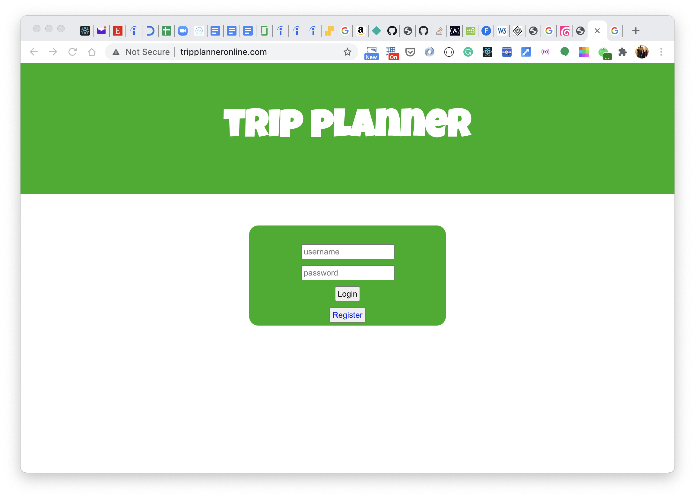

my portfolio
About
My name is Carlos Kruger. I am a full-stack web developer. I have experience working with Node and Java web applications. My first experience with technology was in mainframe using COBOL
Skills
Node | Javascript | Express | React | Redux | Java | Spring | SQL | PostgreSQL | Python
Projects
Trip Planner Project is a project that can help you plan or record your memories of a trip by saving your notes or pictures. You need to sign in. It was created with a Node/Express back-end. It uses React and Redux in the front-end and a PostgreSQL database.

Aguas de Marte is a space game written with Canvas. If you want to play it, you will find asteroids, which you can destroy by shooting at them by pressing the space key. You can control where you are going by using the up and down arrow keys. Avoid the red bubbles but try to go through the water bubbles.

Contact
carloskr@yahoo.com / (914)714-5368